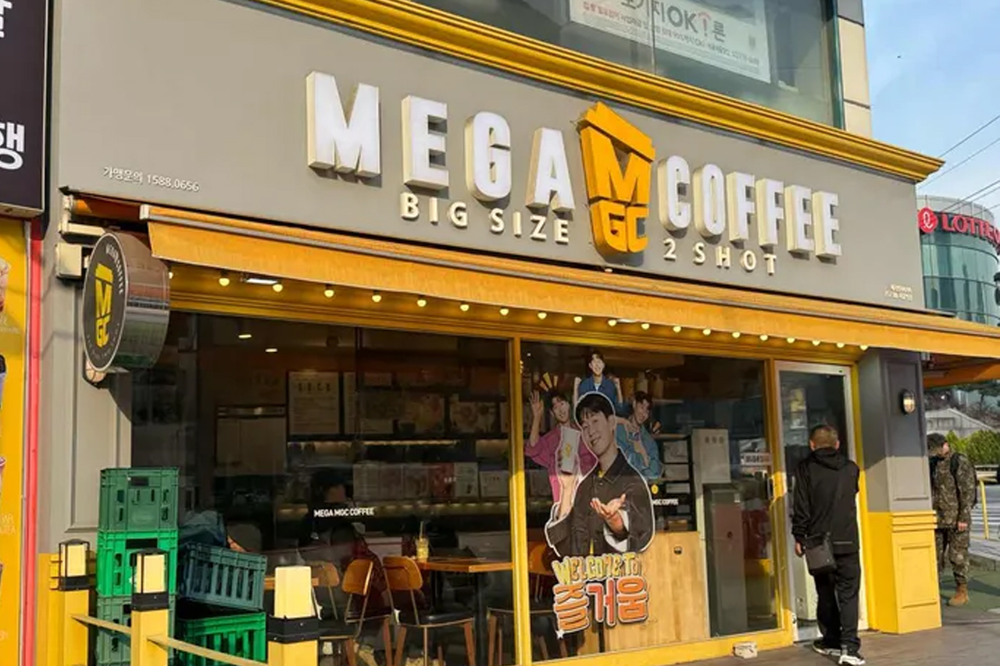
메가커피 용산후암점
아메리카노, 시즌 음료, 디저트
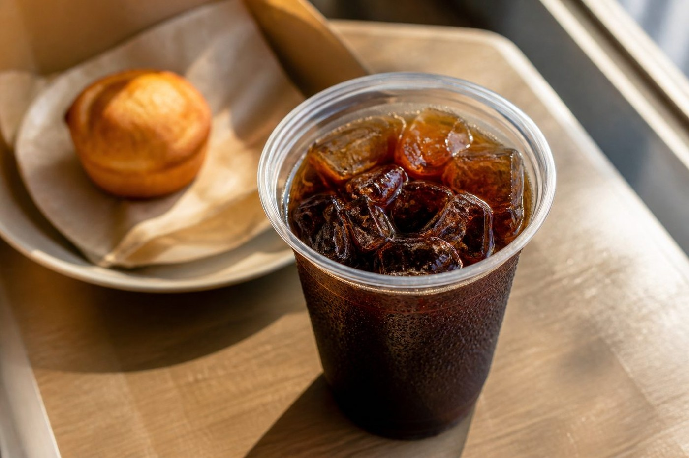
한국에는 합리적인 가격의 테이크아웃 카페부터 디저트·브런치까지 갖춘 카페 체인까지 다양합니다. 관광지·지하철역 근처에서도 쉽게 찾을 수 있어, 여행 중 휴식·충전 장소로 쓰기 좋습니다.

아메리카노, 시즌 음료, 디저트
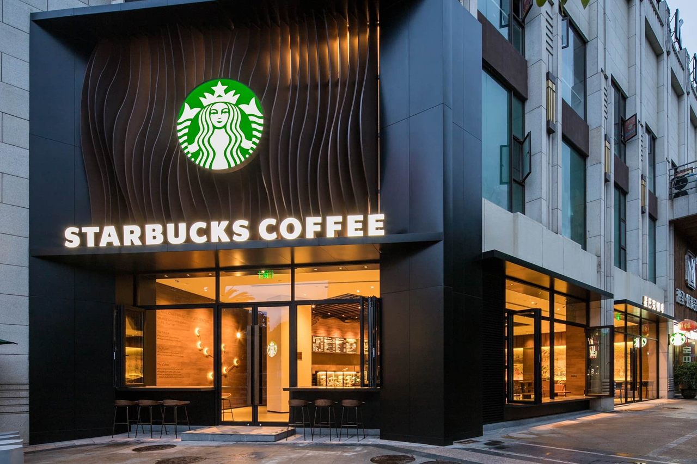
카페 아메리카노
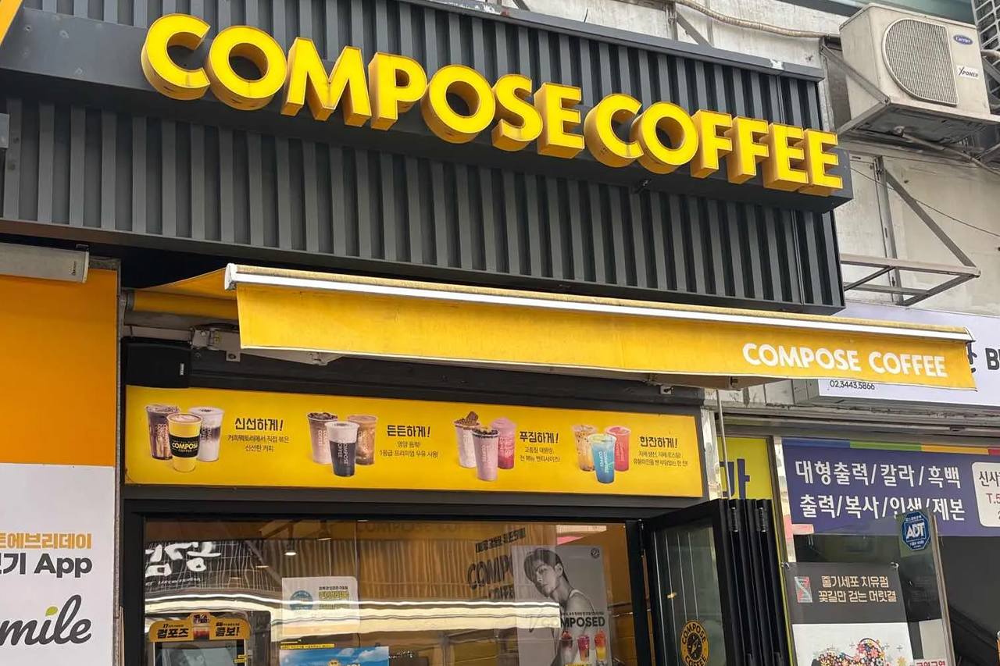
아메리카노
카페 아메리카노
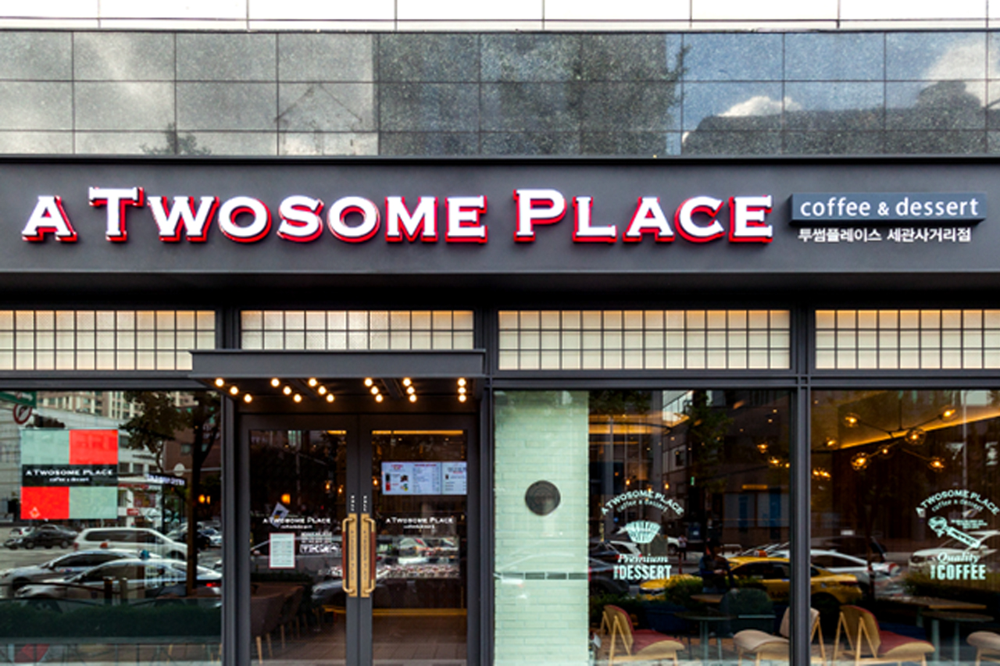
스트로베리초콜릿생크림
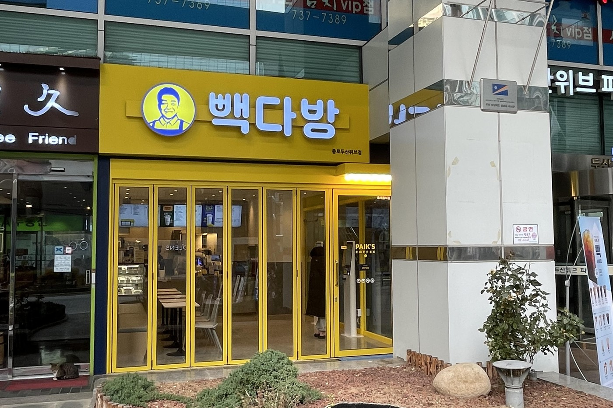
[패스오더전용] 100원 아메리카노
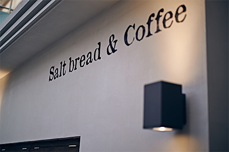
소금빵
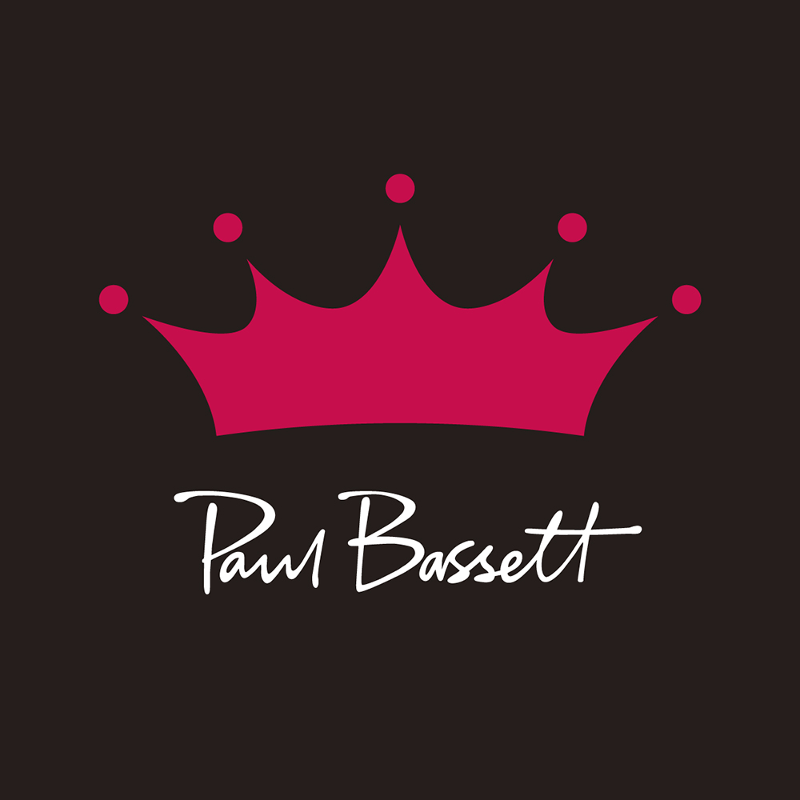
룽고
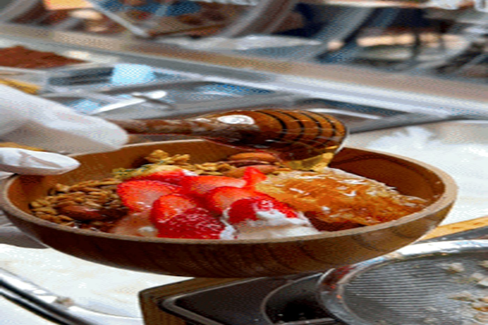
클래식모히또
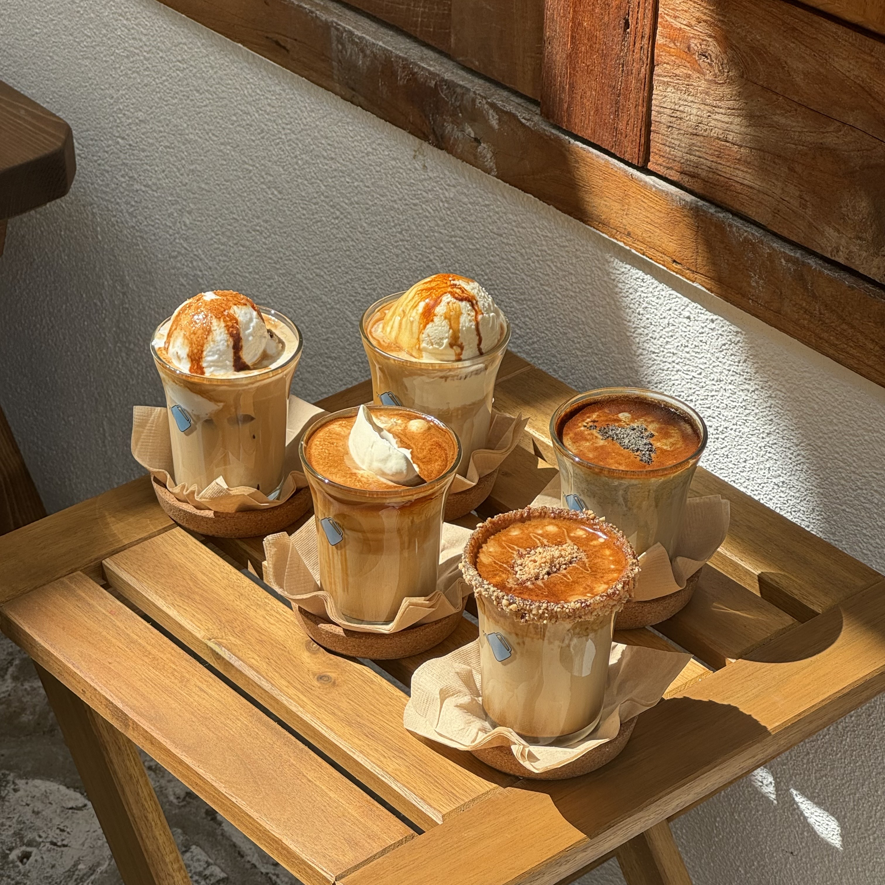
미루꾸 시그니처 5종
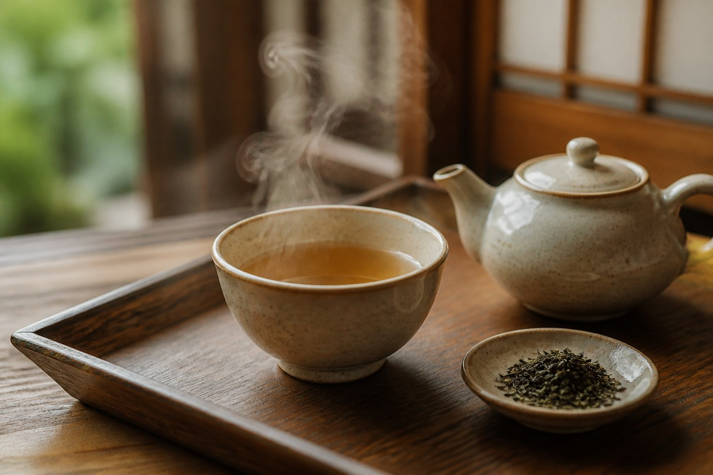
찻자리
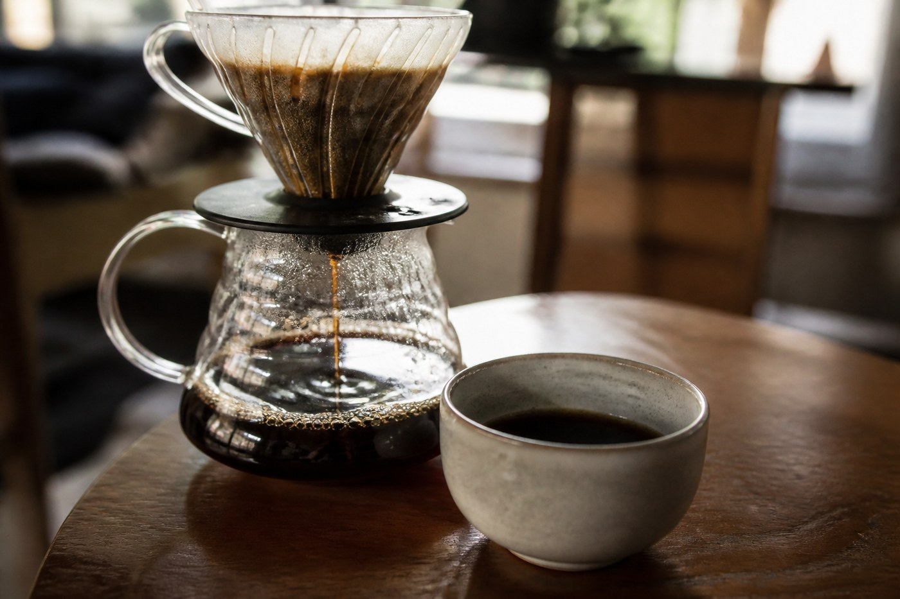
필터 커피
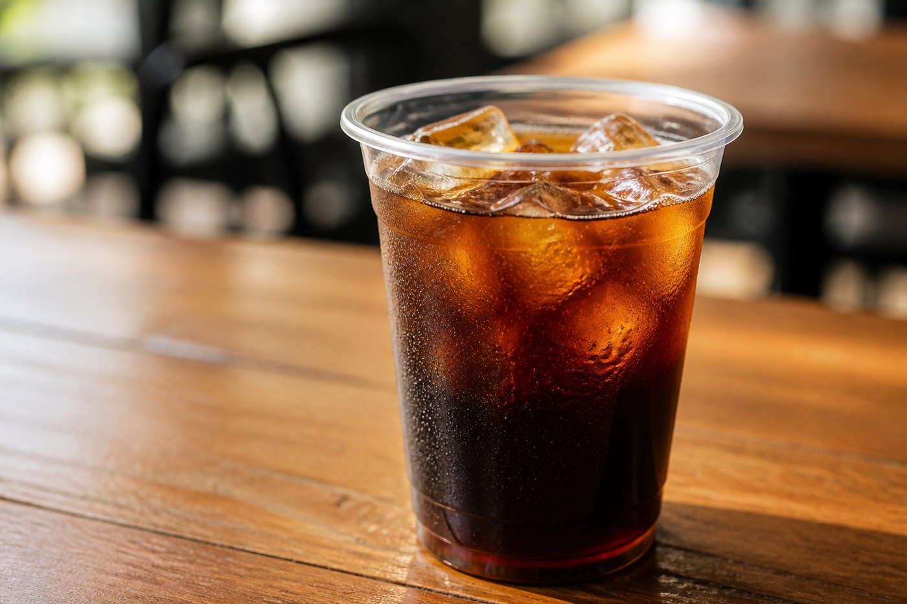
카페 아메리카노
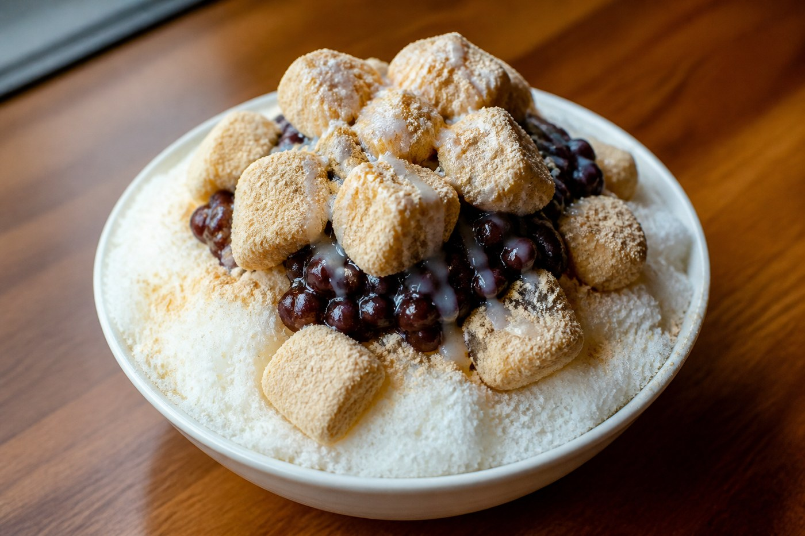
팥빙수
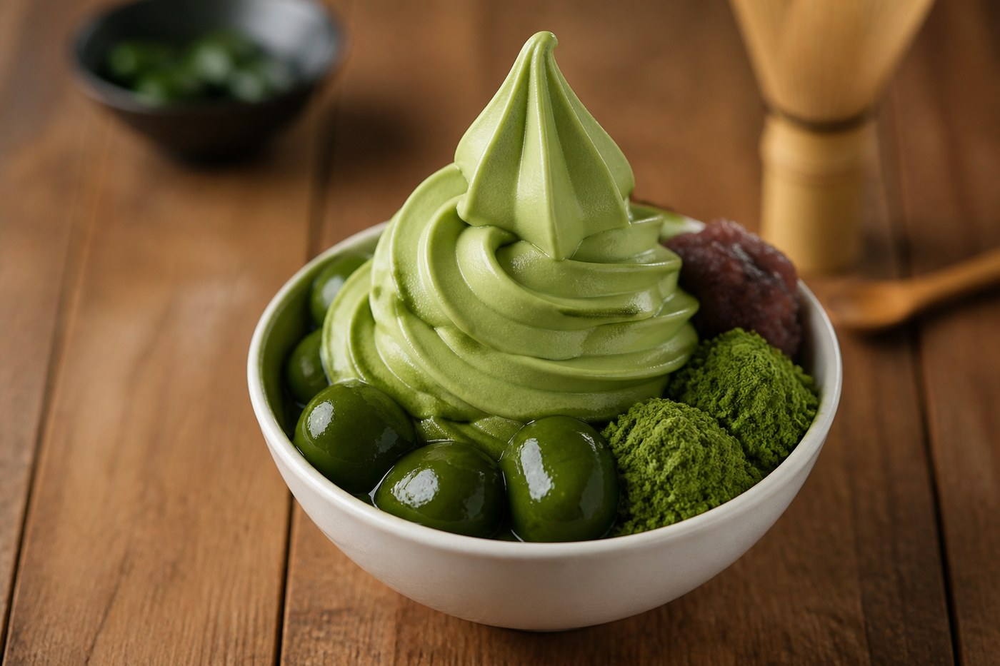
딸기 말차 아이스크림

카페 아메리카노